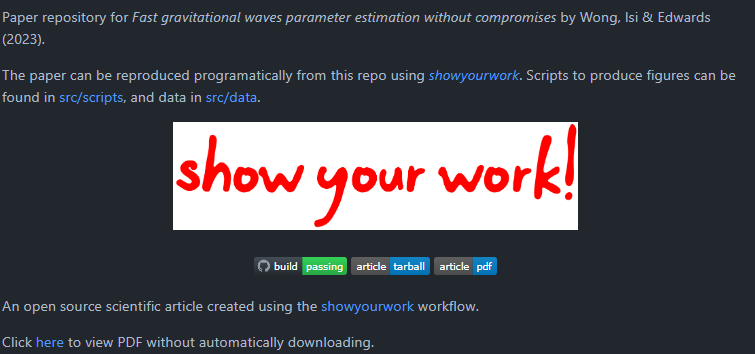
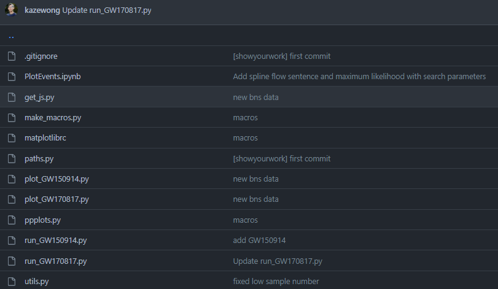

Take away (generated by language model)
- Normalizing flow is a powerful tool for building population model
- flowMC is a new tool for Bayesian inference
- flowMC + GW = 🚀🚀🚀


Showyourwork - reproducible science


Take away (from Kaze)
- Use machine learning where you need it the most
- ML can be great proposals
- Leverage modern computing
- Reproducible science
- Happy to chat: LLM, diffusion, non-gaussian